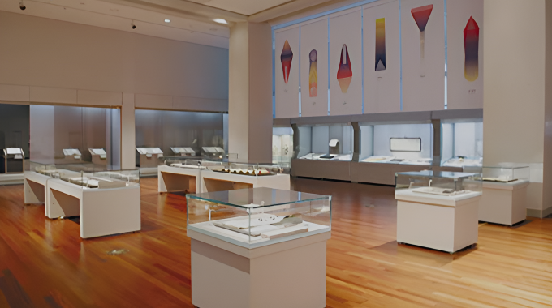
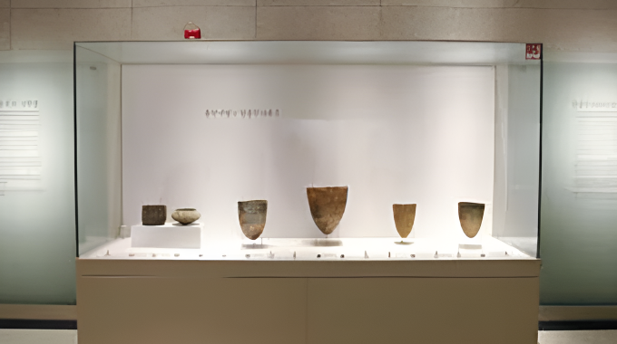
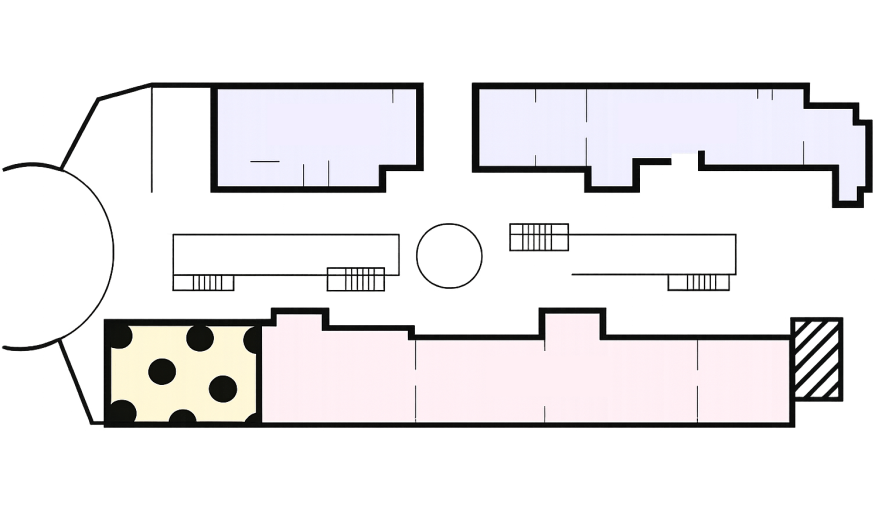
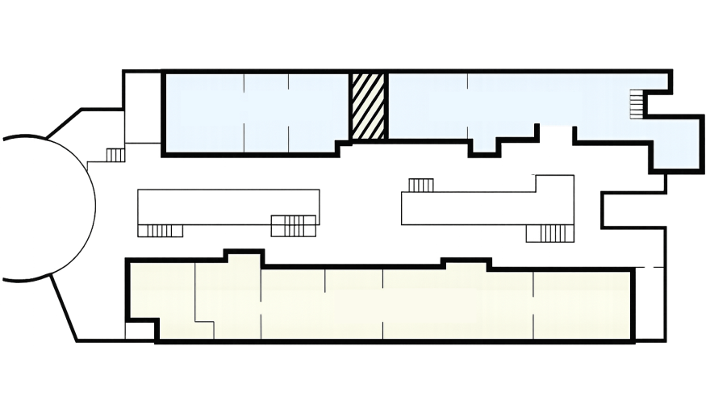

국립중앙박물관의 상설전시장은 총 7개의 관과 39개의 실로 구성되어 9,884점의 유물을 전시하여 제공하고 있으며 전시물은 외부전시 일정 및 유물의 보존 상태를 위하여 주기적으로 교체하고 있습니다. 상설 전시장은 누구나 무료로 관람하실 수 있습니다.

고려, 조선, 대한제국실로 꾸며진 북쪽 전시공간은 당시의 역사자료를 관람객이 쉽게 이해하고 흥미를 느낄 수 있도록 전시되어 있습니다.

인류가 한반도에 살기 시작한 구석기시대부터 통일신라와 발해가 공존한 남북국시대까지 우리나라의 역사와 문화를 시간의 흐름에 따라 보여주는 통사적 전시 공간입니다.

서화, 불교 회화, 목칠공예 등 선과 색채로 발휘된 한국전통문화의 아름다움을 감상할 수 있는 공간입니다.
국립중앙박물관에 기증된 문화유산을 전시하여 기증자들을 기리며 기증의 의미와 가치를 헤아리는 공간입니다.
사유의 방은 우리나라의 국보 반가사유상 두 점이 나란히 전시된 공간입니다.

한국 불교조각과 고려청자와 조선 백자 등의 도자공예 그리고 금속 공예문화의 진수를 감상할 수 있는 전시공간입니다.
중국, 일본, 중앙아시아, 인도•동남아시아 등 세계 각 지역의 다양한 문화를 전시한 공간입니다.